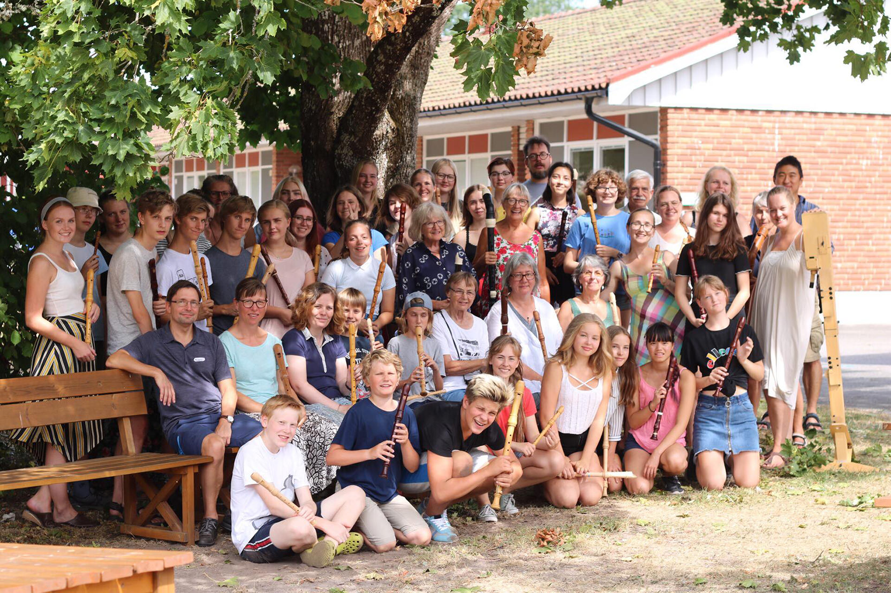

7-11 augusti 2019 Glimåkra Blockflöjtsdagar
7-11 augusti hålls Glimåkra Blockflöjtsdagar än en gång på vackra Glimåkra Folkhögskola! På programmet står ensemblespel, masterclasses, workshops, teknikpass, konserter, bad och lägeraktiviteter. Man får undervisning och inspiration av erfarna blockflöjtister och pedagoger. Sist men inte minst, får man chans att träffa och spela tillsammans med andra som har blockflöjten som intresse!
Årets gäster är blockflöjtisten och pedagogen Matilda Bremer. Vi får även besök av musikerkollektivet Bastard Barock. Denna prisbelönta och nyskapande grupp ger konsert och workshop med deltagarna.

Det finns två kurser att välja mellan:
- Ensemblekursen. Denna kurs är för dig som är 12 år eller äldre. Här spelar vi både i stora och små ensembler. Vi vill att du som går denna kurs ska ha viss notläsningsvana.
- Solokursen. Denna är i första hand för dig som går, eller är intresserad av att söka en högre musikutbildning i blockflöjt. Här spelar du kammarmusik samt får lektioner i masterclass-form.
 Glimåkra Folkhögskola
Glimåkra Folkhögskola

Deltagare 2018
Kostnad 2019 för anmälningsavgift, undervisning, mat och logi i dubbelrum 5 dagar:
- Ensemblekurs - 2690 kr
- Solokurs - 3090 kr
Medlemmar i Föreningen för Tidig Musik ges 150 kr rabatt.
Anmäl dig här!
Kontakt: glimakrablockflojtsdagar@gmail.com
På vår sida på Facebook finns foton och klipp från tidigare kurser.

Välkomna till Glimåkra hälsar arrangörerna Annie, Pia, Sofia och Emelie.
Glimåkra Blockflöjtsdagar genomförs med stöd av: